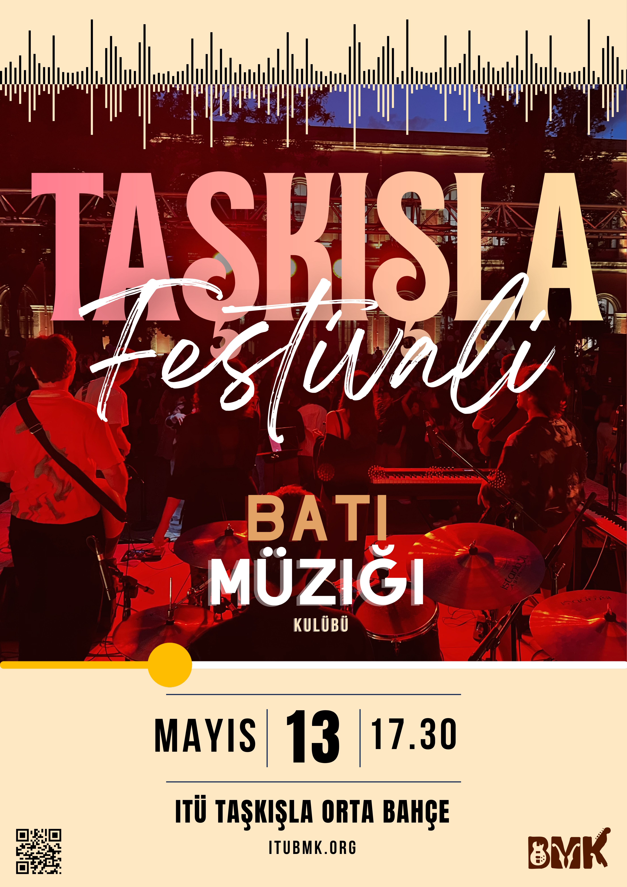

← Tüm Etkinlikler
';">
Konser
Taşkışla Konseri
Taşkışla'nın tarihi atmosferinde müzikle buluşuyoruz.

🎸Afiş yakında
Tarih
13 Mayıs 2026
Saat
17.30
Konum
İTÜ Taşkışla Kampüsü Orta Bahçe
Katılım
Ücretsiz
Etkinlik Hakkında
Taşkışla Konseri'nde BMK sahnesi, tarihi kampüs atmosferiyle birleşiyor. Farklı tarzlarda performanslarla dolu bir akşamda buluşuyoruz.
Etkinlik gününe yakın saatlik akış ve duyurular için sosyal medya hesaplarımızı takip edebilirsiniz.
Bu konserde:
Canlı performanslar
Enerjik sahne şovları
Çeşitli müzik türleri
Tarihi kampüs atmosferi
📍 Nasıl Gelinir?
Taksim Metro durağında indikten sonra 10 dakika yürüyerek Taşkışla Kampüsü'ne ulaşabilirsiniz.
🌤️ Hava Durumu
Etkinlik günü 22 derecelik açık bir hava bekleniyor.
💬 İletişim
Sorularınız için bize Instagram'dan ulaşabilirsiniz.